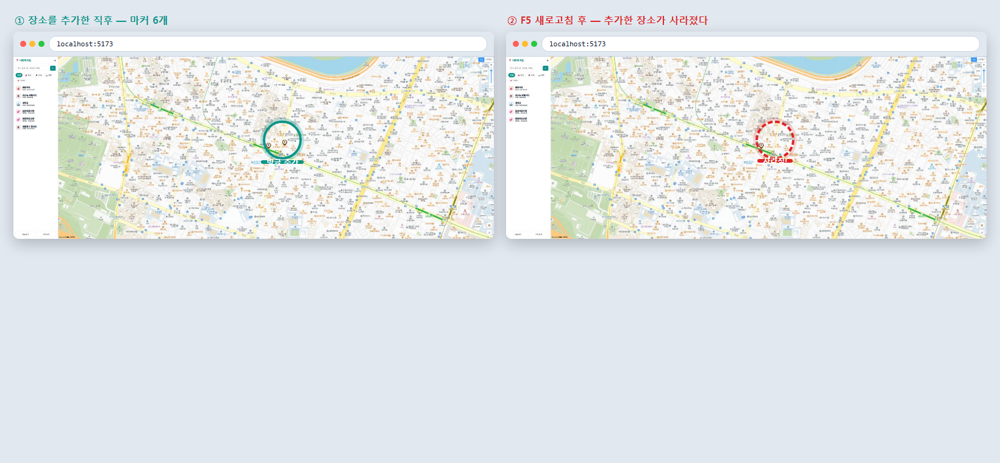
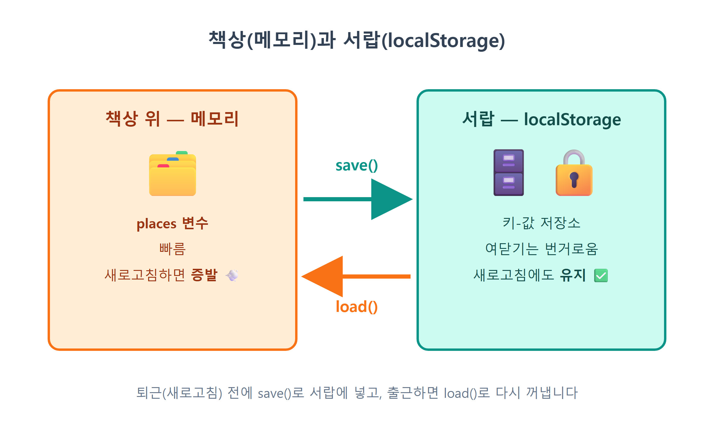
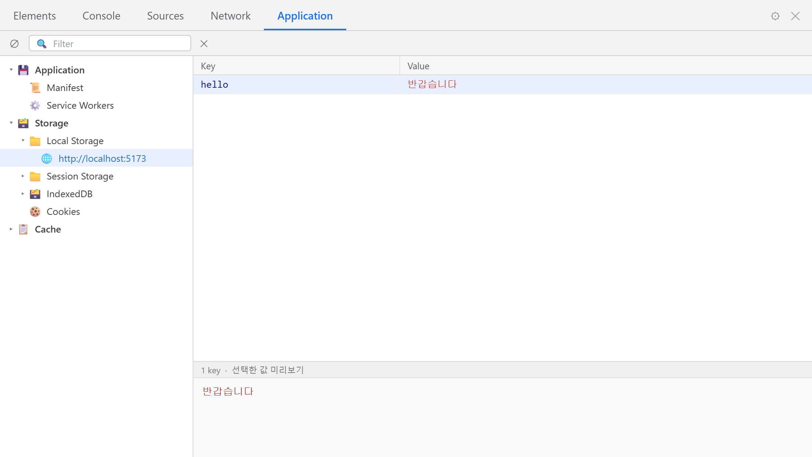
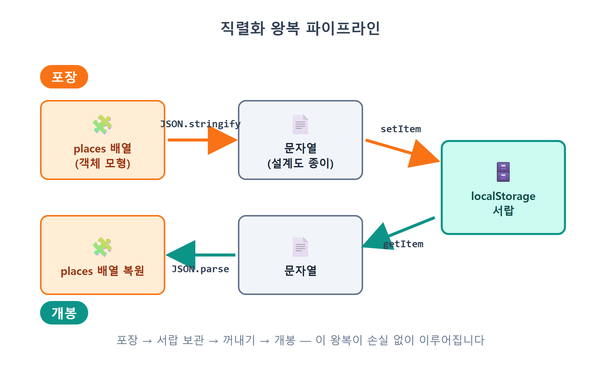
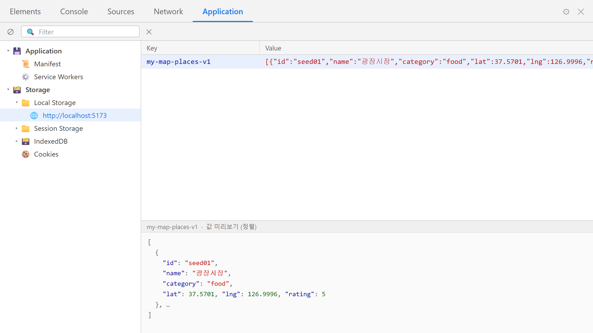
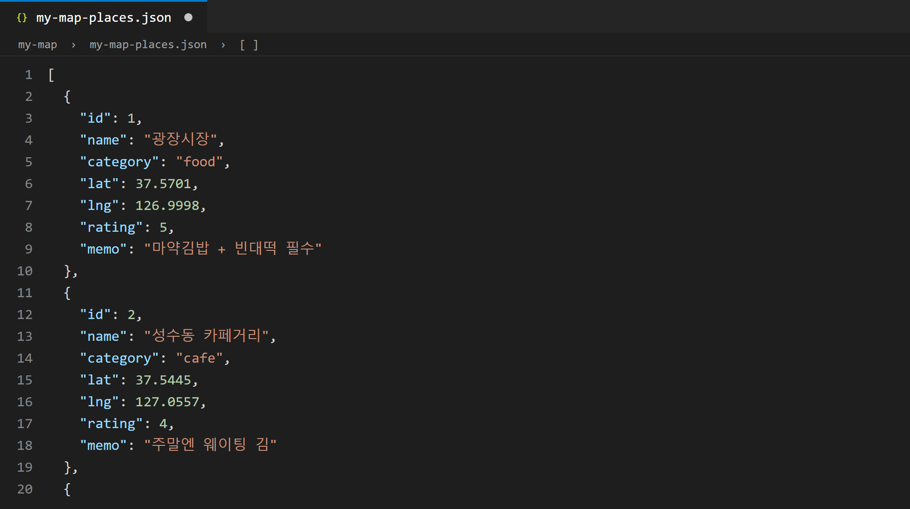
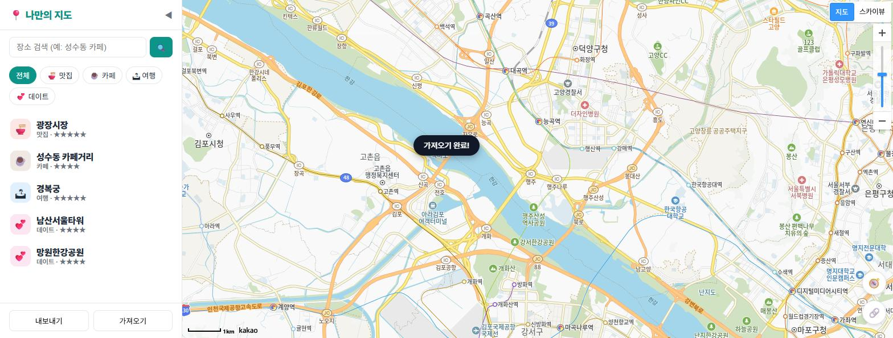

17장 localStorage 저장¶
이 장에서 배우는 것
- 새로고침 한 번에 장소가 몽땅 사라지는 이유를 메모리와 저장소의 차이로 이해합니다
- 브라우저에 딸린 키-값 저장소 localStorage의 사용법을 배웁니다
- 배열을 문자열로 포장하고 다시 푸는 JSON.stringify / JSON.parse를 익힙니다
- 저장이 실패할 수 있는 상황과 try-catch로 안전하게 감싸는 법을 배웁니다
- 저장 코드를 save() 한 곳에 모으는 설계와, JSON 내보내기/가져오기 백업 기능을 만듭니다
16장은 우리 앱의 큰 도약이었습니다. 지도를 클릭해서, 또 검색 결과의 ＋ 버튼으로 장소를 추가할 수 있게 됐죠. 성수동 카페를 검색해 담고, 지도를 클릭해 단골 국밥집도 넣고, 나만의 지도가 제법 채워졌을 겁니다. 그런데 지금부터 아주 잔인한 실험을 하나 해 보겠습니다. 장소를 두세 개 정성껏 추가한 다음, ++f5++ 를 눌러 새로고침해 보세요.
방금 추가한 장소가 전부 사라졌습니다. 마커도, 목록도, 흔적도 없이. 남은 것은 12장에서 넣어 둔 기본 장소들뿐입니다. 열심히 만든 지도가 새로고침 한 번에 초기화된다면, 이 앱은 장난감이지 도구가 아닙니다. 이번 장에서는 이 문제를 해결합니다. 새로고침해도, 브라우저를 껐다 켜도, 컴퓨터를 재부팅해도 내 장소가 그대로 남아 있는 진짜 저장을 만듭니다. 그리고 한 걸음 더 나아가, 내 지도를 파일로 내보내고 가져오는 백업 기능까지 답니다.

그림 17.1 — 새로고침 전(왼쪽)과 후(오른쪽): 추가한 장소가 사라졌다
17.1 왜 사라질까 — 변수는 메모리에 산다¶
범인부터 찾아봅시다. 우리 장소 데이터는 지금 store.js 안의 places라는 변수에 배열로 담겨 있습니다. 16장에서 store.add()를 호출하면 이 배열에 새 장소가 push되고, 화면에 마커가 찍혔습니다. 여기까지는 완벽합니다. 문제는 이 변수가 사는 동네입니다.
자바스크립트 변수는 컴퓨터의 메모리(RAM)에 삽니다. 메모리는 아주 빠르지만 치명적인 특징이 하나 있습니다. 전원이 꺼지면, 프로그램이 끝나면, 내용이 통째로 증발한다는 것입니다. 브라우저에서 "프로그램이 끝나는" 순간이 언제일까요? 바로 새로고침입니다. 새로고침은 페이지를 살짝 다듬는 게 아니라, 실행 중이던 자바스크립트 세계를 완전히 철거하고 처음부터 다시 짓는 일입니다. places 배열도 철거와 함께 사라지고, 새로 지어진 세계에서는 defaultPlaces.js의 기본 데이터로 다시 시작합니다. 우리가 추가한 장소는 어디에도 기록된 적이 없으니 돌아올 방법도 없습니다.
책상에 비유하면 이렇습니다. 메모리는 책상 위입니다. 지금 작업 중인 서류를 펼쳐 놓고 빠르게 읽고 쓰기에 좋지만, 퇴근할 때(새로고침) 책상은 싹 치워집니다. 내일도 봐야 할 서류라면 퇴근 전에 서랍에 넣어 둬야 합니다. 서랍은 책상보다 여닫기 번거롭지만, 내용물이 밤새 사라지지 않습니다. 우리에게 필요한 것이 바로 이 서랍, 즉 영속 저장소1입니다. 그리고 브라우저는 모든 웹사이트에게 작은 서랍을 하나씩 기본으로 제공합니다. 이름이 바로 localStorage입니다.

그림 17.2 — 책상(메모리)과 서랍(localStorage)
17.2 localStorage — 브라우저 안의 작은 서랍¶
localStorage는 브라우저가 사이트마다 하나씩 마련해 주는 키-값(key-value) 저장소입니다. 사용법은 이름표(키)를 붙여 값을 넣고, 나중에 같은 이름표로 꺼내는 것이 전부입니다. 백문이 불여일견, 개발자도구 콘솔(++f12++)에서 직접 만져 봅시다.
이제 결정적인 실험입니다. 새로고침을 한 다음 콘솔에 다시 입력해 보세요.
값이 그대로 살아 있습니다. 브라우저를 완전히 껐다 켜도, 내일 다시 열어도 남아 있습니다. 변수와는 완전히 다른 세계죠. 개발자도구의 Application 탭 → Local Storage → http://localhost:5173을 열면 방금 저장한 키와 값을 눈으로 확인할 수 있습니다. 한국어 크롬에서는 탭 이름이 「애플리케이션」으로 표시되고, 탭 목록에 안 보이면 개발자도구 오른쪽 끝의 » 버튼 속에 숨어 있습니다. 이 화면은 앞으로 우리 서랍 속을 들여다보는 창문 역할을 하니 위치를 기억해 두세요.

그림 17.3 — 개발자도구 Application 탭에서 본 localStorage
localStorage의 성격을 세 가지만 정리하면 이렇습니다.
- 사이트별 서랍입니다.
localhost:5173이 저장한 값은localhost:5173에서만 보입니다. 다른 사이트가 우리 서랍을 열어 볼 수 없고, 우리도 남의 서랍을 못 엽니다. 이 구분 단위를 오리진(origin)2이라고 부릅니다. - 용량은 보통 5MB 안팎입니다. 텍스트 데이터에게는 넉넉한 크기입니다. 장소 하나가 200자 정도라면 수만 개도 들어갑니다. 다만 사진 같은 큰 데이터를 넣을 곳은 아닙니다.
- 그리고 가장 중요한 특징 — 문자열만 저장할 수 있습니다.
마지막 항목이 우리의 다음 관문입니다. 우리 places는 문자열이 아니라 객체가 담긴 배열이니까요. 시험 삼아 배열을 그냥 넣으면 어떻게 되는지 콘솔에서 확인해 봅시다.
배열이 '1,2,3'이라는 문자열로 뭉개져 버렸습니다. 저장하는 순간 자바스크립트가 배열을 억지로 문자열로 바꿔 버린 결과인데, 이 과정에서 구조가 망가집니다. 객체라면 더 심각해서 '[object Object]'라는 쓸모없는 문자열이 됩니다. 서랍에는 종이(문자열)만 들어가는데, 우리는 입체 모형(배열·객체)을 넣으려는 셈입니다. 모형을 설계도 종이로 옮겨 그리는 기술이 필요합니다.
17.3 JSON.stringify와 parse — 포장하고 풀기¶
그 기술이 바로 JSON 직렬화입니다. 12장에서 장소 데이터를 설계할 때 JSON이라는 형식을 스쳐 지나갔는데, 오늘 제대로 씁니다. 자바스크립트에는 이 변환을 담당하는 내장 도구가 두 개 있습니다.
JSON.stringify(값)— 배열·객체를 JSON 문자열로 바꿉니다. (포장)JSON.parse(문자열)— JSON 문자열을 다시 배열·객체로 되살립니다. (개봉)
콘솔에서 왕복 여행을 시켜 봅시다.
const trip = [{ name: '어니언 성수', lat: 37.5446, lng: 127.0447 }];
const packed = JSON.stringify(trip);
packed; // → '[{"name":"어니언 성수","lat":37.5446,"lng":127.0447}]'
typeof packed; // → 'string' (진짜 문자열!)
const unpacked = JSON.parse(packed);
unpacked[0].name; // → '어니언 성수' (완벽하게 복원!)
stringify가 만든 결과는 사람 눈에도 원본과 거의 비슷하게 생겼지만, 정체는 순수한 문자열입니다. 구조 정보(중괄호·대괄호·따옴표)가 전부 글자로 기록되어 있어서, parse가 이 글자들을 읽고 원래의 배열·객체를 그대로 다시 조립해 낼 수 있습니다. 이 왕복이 손실 없이 이루어진다는 것이 핵심입니다. 포장(stringify) → 서랍 보관(setItem) → 꺼내기(getItem) → 개봉(parse)의 4단계 파이프라인만 있으면, 어떤 데이터든 새로고침 너머로 살려 보낼 수 있습니다.

그림 17.4 — 직렬화 왕복 파이프라인
💡 팁
JSON.parse는 까다로운 검사관입니다. 문자열이 JSON 문법에 조금이라도 어긋나면(따옴표 하나만 빠져도) 값을 돌려주는 대신 에러를 던지며 멈춥니다. "이상한 값을 조용히 돌려주는 것보다 크게 소리치는 게 낫다"는 설계인데, 덕분에 우리는 에러에 대비하는 코드를 함께 써야 합니다. 바로 다음 절의 try-catch가 그 역할입니다.
17.4 store.js에 영속화 달기 — save()는 한 곳에¶
원리는 전부 손에 넣었습니다. 이제 우리 store.js에 적용할 차례입니다. 설계 요구사항을 정리해서 Claude Code에게 통째로 시켜 봅시다.
🗣 이렇게 시키세요
src/store.js에 localStorage 영속화를 추가해줘. 키 이름은 'my-map-places-v1'로 하고, 시작할 때 저장된 데이터가 있으면 JSON.parse로 불러오고 없거나 깨져 있으면 기본 데이터로 시작해줘. 불러온 값이 배열이 아니거나 항목의 name/lat/lng 형식이 이상하면 그 항목은 걸러내줘. 저장하는 코드는 save() 함수 딱 한 곳에만 두고, 데이터를 바꾸는 모든 메서드 끝에서 save()를 부르게 해줘. 지금은 add뿐이지만 앞으로 쓸 get·update·remove·replaceAll 창구도 이참에 만들어서 같은 규칙을 적용해줘. localStorage는 사생활 모드 같은 데서 실패할 수 있으니 읽기와 쓰기 모두 try-catch로 감싸고, 실패해도 앱이 죽지 않게 해줘.
프롬프트에 설계 원칙이 세 개나 들어 있습니다. 키 이름, save() 한 곳, try-catch. 이런 원칙을 우리가 정해서 말해 주는 것이 바이브코딩의 요령입니다. Claude Code가 고쳐 준 store.js의 앞부분, 불러오기와 저장 담당입니다.
// src/store.js — 장소 데이터 저장소 (localStorage 영속화)
import { DEFAULT_PLACES } from './defaultPlaces.js';
const STORAGE_KEY = 'my-map-places-v1';
const listeners = []; // ← 18장의 예고편 (아래 박스 참고)
let places = load();
function load() {
try {
const raw = localStorage.getItem(STORAGE_KEY);
if (raw) {
const data = JSON.parse(raw);
if (Array.isArray(data)) return data.map(normalize).filter(Boolean);
}
} catch (e) {
console.warn('저장 데이터를 읽지 못해 기본 데이터로 시작합니다.', e);
}
return structuredClone(DEFAULT_PLACES);
}
function save() {
try {
localStorage.setItem(STORAGE_KEY, JSON.stringify(places));
} catch (e) {
console.warn('localStorage 저장 실패', e);
}
listeners.forEach((fn) => fn(places)); // ← 이 줄도 18장의 예고편
}
16장에서 let places = [...DEFAULT_PLACES]였던 첫 줄이 let places = load()로 바뀐 것부터 눈에 들어옵니다. 앱이 시작될 때 서랍부터 열어 보는 구조가 된 것이죠. 찬찬히 읽어 봅시다.
STORAGE_KEY = 'my-map-places-v1' — 서랍에 붙일 이름표를 상수로 뽑아 뒀습니다. data 같은 밋밋한 이름 대신 앱 이름이 들어간 구체적인 키를 쓰면 다른 코드와 충돌할 일이 없습니다. 끝의 v1은 버전 표시입니다. 나중에 데이터 구조를 크게 바꾸게 되면 v2라는 새 키로 갈아타는 식으로, 옛 형식의 데이터와 새 코드가 충돌하는 사고를 피할 수 있습니다. 작은 습관이지만 미래의 나를 구해 주는 보험입니다.
load() — 앱이 시작될 때 딱 한 번 실행됩니다. 서랍에서 꺼내(getItem) 개봉(JSON.parse)하는, 그림 17.4의 아래쪽 경로 그대로입니다. raw가 null이면(한 번도 저장한 적 없는 첫 방문) if (raw)를 통과하지 못하고 아래로 내려가 기본 데이터로 시작합니다. 그런데 개봉한 다음에 두 가지 검사가 더 붙어 있죠. Array.isArray(data)로 "꺼낸 것이 정말 배열인가"를 확인하고, 배열이 맞으면 data.map(normalize).filter(Boolean)으로 항목을 하나씩 걸러 냅니다. 처음 보는 이름 normalize가 궁금하실 텐데, 잠시 뒤에 정체를 밝힙니다.
try-catch — 처음 보는 문법이니 짚고 갑시다. try { ... } catch (e) { ... }는 "일단 해 보고, 터지면 catch 블록으로 수습하라"는 안전망입니다. try 블록 안에서 에러가 나면 프로그램이 죽는 대신 catch로 점프해서 하던 일을 이어 갑니다. 여기서 터질 수 있는 상황은 실제로 존재합니다. 누군가 개발자도구에서 저장된 값을 잘못 건드려 JSON이 깨졌다면 JSON.parse가 에러를 던지고, 브라우저의 사생활 보호 모드나 쿠키·사이트 데이터 차단 설정에서는 localStorage 접근 자체가 에러를 내는 경우가 있습니다. 안전망이 없다면 이 사용자들에게 우리 앱은 하얀 화면만 보여 주고 죽어 버립니다. 안전망 덕분에 "저장은 안 되지만 일단 쓸 수는 있는" 앱으로 살아남죠. 저장이 본업이 아니라 보조 기능일 때는, 실패해도 앱은 계속 돌아가게 만드는 것이 좋은 태도입니다.
normalize — 데이터 검문소 — try-catch가 "JSON이 아예 깨진" 사고를 막아 준다면, normalize는 그다음 단계의 방어입니다. JSON.parse가 성공했다고 안심할 수는 없거든요. 문법은 멀쩡한 JSON인데 내용이 엉터리일 수 있습니다. 이름이 없는 장소, 위도가 999인 좌표, 별점이 -3인 항목 — 누군가 개발자도구에서 값을 만졌거나, 옛 버전 앱이 남긴 데이터거나, (17.5절에서 만들) 가져오기로 들어온 남의 파일일 수도 있습니다. 그래서 store는 문 앞에 검문소를 하나 세워 두고, 어디서 온 데이터든 화면에 올리기 전에 한 번씩 통과시킵니다. store.js 위쪽에 있는 그 검문소입니다.
// 어디서 온 데이터든(저장소·가져오기) 화면에 올리기 전에 한 번 걸러낸다.
function normalize(p) {
if (typeof p !== 'object' || p === null) return null;
if (typeof p.name !== 'string' || !p.name.trim()) return null;
const lat = Number(p.lat);
const lng = Number(p.lng);
if (!Number.isFinite(lat) || lat < -90 || lat > 90) return null;
if (!Number.isFinite(lng) || lng < -180 || lng > 180) return null;
const id = typeof p.id === 'string' && /^[\w-]{1,40}$/.test(p.id)
? p.id
: 'p' + Date.now().toString(36) + Math.random().toString(36).slice(2, 6);
let rating = Math.floor(Number(p.rating));
if (!Number.isFinite(rating)) rating = 0;
rating = Math.min(5, Math.max(0, rating));
return {
id,
name: p.name.trim().slice(0, 60),
category: typeof p.category === 'string' ? p.category : 'food',
lat,
lng,
rating,
memo: typeof p.memo === 'string' ? p.memo.slice(0, 500) : '',
};
}
검문 규칙을 읽어 보면 태도가 두 가지로 나뉩니다. 고칠 수 없는 결함은 탈락시킵니다. 이름이 없거나, 위도가 -90~90을 벗어나거나, 경도가 -180~180 밖이면 장소라고 부를 수 없으니 null을 돌려보내고, load()의 filter(Boolean)이 그 null들을 배열에서 걷어 냅니다(Boolean(null)은 false니까요). 반면 고칠 수 있는 흠은 고쳐서 통과시킵니다. 별점이 7이면 5로, -3이면 0으로 눌러 맞추고(Math.min(5, Math.max(0, ...)) — 값을 범위 안에 가두는 이 수법을 클램프라고 부릅니다), 60자가 넘는 이름과 500자가 넘는 메모는 잘라 내고, id가 없거나 이상한 문자가 섞여 있으면 안전한 새 id를 발급해 줍니다(/^[\w-]{1,40}$/는 "영문·숫자·밑줄·하이픈 1~40자"라는 정규식 검사인데, 정규식은 21장에서 제대로 배웁니다). 항목 하나가 이상하다고 지도 전체를 포기하지 않고, 살릴 수 있는 것은 최대한 살리는 것이죠. 검문소를 함수 하나로 만들어 둔 것도 save()와 같은 이유입니다. 데이터가 들어오는 문이 여러 개라도(localStorage, 가져오기 파일) 검사 규칙은 한 곳에만 있으면 됩니다.
structuredClone(DEFAULT_PLACES) — 기본 데이터를 그대로 쓰지 않고 깊은 복사본을 만들어 씁니다. 16장에서는 스프레드([...DEFAULT_PLACES])로 복사했는데, 그 방식은 배열 껍데기만 복사하는 얕은 복사라서 안에 든 장소 객체들은 여전히 원본과 공유됩니다. 19장에서 장소 수정이 시작되면 그 공유가 원본 오염 사고로 이어질 수 있어, 속까지 통째로 복사하는 structuredClone으로 업그레이드한 것입니다. 원본은 언제나 새것 그대로 두고 복사본에 낙서한다 — 이것도 두고두고 쓰는 습관입니다.
save() — 포장(stringify) 후 보관(setItem), 그림 17.4의 위쪽 경로입니다. 역시 try-catch로 감쌌습니다. 쓰기는 용량 초과(5MB)나 사생활 모드에서 실패할 수 있습니다.
🔎 낯선 두 줄, listeners는 18장의 예고편입니다
코드에 우리가 시키지 않은 것이 두 줄 있습니다. 맨 위의 const listeners = []와 save() 끝의 listeners.forEach((fn) => fn(places)). Claude Code가 "데이터가 바뀌면 알림을 받고 싶은 함수들의 명단"을 미리 마련해 둔 것인데, 지금은 명단이 텅 빈 배열이라 forEach는 아무 일도 하지 않습니다. 즉, 이 두 줄은 이번 장의 동작에 아무 영향이 없습니다. 이 명단에 누가 이름을 올리고 무슨 일이 벌어지는지 — 그것이 18장의 하이라이트인 구독 패턴입니다. 지금은 "save()가 저장 후에 방송할 준비까지 해 두었다" 정도로만 기억해 두세요.
그런데 이 save()는 누가, 언제 불러 줄까요? 여기가 이번 장 설계의 백미입니다. 데이터를 바꾸는 문은 store에 몇 개 없습니다. 추가(add), 수정(update), 삭제(remove), 통째 교체(replaceAll) — 16장에는 add 하나뿐이었는데, 프롬프트에서 부탁한 대로 앞으로 쓸 문들까지 이번에 미리 달렸습니다. 이 모든 문의 마지막 줄에서 save()를 호출합니다.
export const store = {
all() { return places; },
get(id) { return places.find((p) => p.id === id); },
add(place) {
const id = 'p' + Date.now().toString(36);
const item = { id, rating: 0, memo: '', ...place };
places.push(item);
save(); // 바꿨으면 저장!
return item;
},
update(id, patch) {
const p = this.get(id);
if (!p) return;
Object.assign(p, patch);
save(); // 여기도!
},
remove(id) {
places = places.filter((p) => p.id !== id);
save(); // 여기도!
},
replaceAll(next) {
places = next;
save(); // 여기도!
},
// ...내보내기/가져오기는 17.5절에서
};
"저장 버튼을 따로 만들지 않는다"는 점을 눈여겨보세요. 사용자가 장소를 추가하는 순간, 별점을 고치는 순간, 삭제하는 순간 — 데이터가 변하는 모든 순간에 자동으로 서랍에 기록됩니다. 사용자는 저장이라는 개념 자체를 신경 쓸 필요가 없습니다. 그리고 저장 로직이 save() 한 곳에 모여 있으니, 나중에 저장 방식을 바꾸고 싶어도(예: 서버 저장) 고칠 곳이 딱 한 곳입니다. 만약 add 안에도 setItem, remove 안에도 setItem을 흩뿌려 놓았다면, 수정할 때마다 네 군데를 찾아다니고 한 군데를 빼먹는 버그가 생겼을 겁니다. 한 가지 일은 한 곳에서. 8장부터 지켜 온 우리 앱의 제1원칙이 여기서도 반복됩니다.
한 가지 미리 말해 두면, 이 네 개의 문 중에서 오늘 실제로 두드릴 수 있는 것은 add(16장의 추가 폼)뿐입니다. update와 remove를 누르는 UI(별점·메모 수정, 삭제 버튼)는 19장에서 만들고, replaceAll류의 통째 교체는 잠시 뒤 17.5절의 가져오기에서 만납니다. AI가 창구를 미리 다 만들어 둔 것이니, "아직 안 쓰는 코드가 있네?"라고 놀라지 않아도 됩니다.
⚠️ 주의
update처럼 이미 배열 안에 있는 객체의 속성만 바꾸는 경우, "배열은 그대로인데 저장할 게 있나?" 싶을 수 있습니다. 있습니다. localStorage에 저장되는 것은 배열의 현재 내용 전체를 찍은 문자열이므로, 속성 하나만 바뀌어도 다시 save()해야 서랍 속 내용이 최신이 됩니다. 데이터를 바꾸는 메서드를 새로 만들 때 save() 호출을 빼먹는 것이 이 패턴의 유일한 함정입니다.
이제 대망의 실행 확인입니다. 확인은 서랍과 화면, 두 단계로 나눠서 합니다.
확인 ① — 서랍에 기록됐는가. 브라우저를 새로고침하고, 지도를 클릭해 장소를 하나 추가하세요. 그리고 개발자도구의 Application(「애플리케이션」) 탭 → Local Storage → http://localhost:5173을 엽니다. my-map-places-v1 키 아래에 우리 장소들이 JSON 문자열로 얌전히 누워 있으면, save()가 제 일을 한 것입니다. 방금 추가한 장소의 이름이 문자열 안에 보이는지까지 확인해 보세요.
확인 ② — 새로고침 후에도 화면에 남는가. 이제 ++f5++. 장소가 그대로 있습니다. 브라우저를 완전히 껐다가 다시 열어도, 내일 아침에 열어도 그대로입니다. 이 두 번째 확인이 성립하는 데는 사실 두 장의 합작이 필요했습니다. 오늘의 load()가 시작 시점에 서랍을 열어 places를 채우고, 16장에서 데이터 원천을 store.all()로 옮겨 둔 덕분에 첫 화면을 그리는 rerender()가 그 배열을 그대로 지도에 올리는 것입니다. 만약 화면이 아직 14장처럼 DEFAULT_PLACES를 보고 있었다면, 서랍에 아무리 쌓여도 화면은 기본 다섯 개만 보여 줬을 겁니다. ①은 되는데 ②가 안 된다면 바로 그 지점 — filteredPlaces()가 어느 배열을 보는지 — 을 의심하세요.
새로고침 한 번에 사라지던 장난감이, 방금 기록이 쌓이는 도구가 됐습니다.

그림 17.5 — 새로고침 후에도 살아남은 장소와 Application 탭의 저장 데이터
17.5 내보내기와 가져오기 — 내 데이터는 내가 지킨다¶
축배를 들기 전에, localStorage의 한계도 정직하게 알아 둡시다. 서랍은 이 컴퓨터, 이 브라우저에 붙어 있습니다. 크롬에 저장한 지도는 엣지에서 안 보이고, 집 컴퓨터의 지도는 노트북에 없습니다. 더 아픈 시나리오도 있습니다. 브라우저 설정에서 "사이트 데이터 삭제"나 "인터넷 사용 기록 삭제"를 실행하면 서랍째 비워집니다. 반년 동안 모은 맛집 100곳이 청소 버튼 한 번에 날아갈 수 있다는 뜻입니다.
그래서 진짜 서비스들은 데이터를 서버에 보관하지만, 서버는 이 책의 범위를 넘어갑니다(26장에서 다음 단계로 소개합니다). 대신 우리는 실용적인 절충안을 답니다. 내 장소 전체를 JSON 파일로 다운로드하는 내보내기와, 그 파일을 다시 읽어 오는 가져오기입니다. 파일로 뽑아 두면 그것이 곧 백업이고, 다른 컴퓨터로 옮기는 이삿짐이며, 친구에게 "내 맛집 지도 받아"라며 건넬 수 있는 선물이 됩니다.
🗣 이렇게 시키세요
사이드바 아래쪽에 "내보내기"와 "가져오기" 버튼을 추가해줘. 내보내기는 store의 장소 전체를 보기 좋게 들여쓰기한 JSON 파일(my-map-places.json)로 다운로드하고, 가져오기는 숨긴 파일 입력으로 JSON 파일을 받아서 store를 통째로 교체해줘. 가져온 데이터가 배열이 아니거나 name/lat/lng 형식이 이상하면 교체하지 말고 toast로 실패 이유를 알려줘. store 쪽에는 exportJson/importJson 메서드로 만들어줘.
먼저 store.js에 추가된 두 메서드입니다.
exportJson() {
return JSON.stringify(places, null, 2);
},
importJson(text) {
const data = JSON.parse(text);
if (!Array.isArray(data)) throw new Error('배열(JSON)이 아닙니다.');
const cleaned = data.map(normalize);
if (cleaned.some((p) => p === null)) {
throw new Error('name/lat/lng 형식이 올바르지 않은 항목이 있습니다.');
}
places = cleaned;
save();
},
exportJson의 JSON.stringify(places, null, 2)에 처음 보는 인자가 붙었습니다. 세 번째 인자 2는 "들여쓰기 2칸으로 예쁘게 포장하라"는 옵션입니다. localStorage에 넣을 때는 아무도 안 읽으니 한 줄로 꽉 눌러 담았지만, 파일은 사람이 열어 볼 수 있으니 읽기 좋게 뽑는 배려입니다.
importJson은 이 장에서 가장 어른스러운 코드입니다. 바깥에서 온 파일을 믿지 않습니다. 파싱한 결과가 배열이 맞는지 확인한 다음, 17.4절에서 세운 검문소 normalize에 항목을 전부 통과시킵니다. 같은 검사를 다시 짜지 않고 검문소를 재사용한 점을 눈여겨보세요. 이름·좌표 검사부터 별점 클램프, id 검증까지 한 번에 따라옵니다. 다만 태도는 load()보다 한층 엄격합니다. load()는 불량 항목을 조용히 걸러 내고 나머지로 시작하지만, importJson은 cleaned.some((p) => p === null) — "검문 탈락자가 한 명이라도 있는가" — 를 확인해서 있으면 throw로 에러를 던지고 교체 자체를 거부합니다. 왜 이렇게까지 할까요? 사용자가 실수로 엉뚱한 파일(가계부 JSON이라든지)을 고를 수 있고, 손으로 편집하다 깨뜨린 파일일 수도 있기 때문입니다. 검증 없이 덮어썼다간 멀쩡하던 지도가 즉사하고, 반쯤만 받아 주면 사용자는 "가져오기가 됐는데 장소가 왜 없지?"라며 더 헷갈립니다. 명시적인 사용자 행동에는 성공 아니면 실패, 둘 중 하나로 분명하게 답하는 것이죠. 잘못된 데이터는 받는 문턱에서 막는다 — 19장에서 배울 보안 감각의 예고편이기도 합니다.
다음은 사이드바에서 버튼과 연결하는 부분입니다(sidebar.js).
// 내보내기 — JSON 파일 다운로드
document.getElementById('btn-export').addEventListener('click', () => {
const blob = new Blob([store.exportJson()], { type: 'application/json' });
const a = document.createElement('a');
a.href = URL.createObjectURL(blob);
a.download = 'my-map-places.json';
a.click();
URL.revokeObjectURL(a.href);
});
// 가져오기 — JSON 파일 업로드
const fileInput = document.getElementById('import-file');
document.getElementById('btn-import').addEventListener('click', () => fileInput.click());
fileInput.addEventListener('change', async () => {
const file = fileInput.files[0];
if (!file) return;
try {
store.importJson(await file.text());
toast('가져오기 완료!');
} catch (e) {
toast('가져오기 실패: ' + e.message);
}
fileInput.value = '';
});
내보내기 쪽은 브라우저에서 파일을 다운로드시키는 표준 마술입니다. Blob3은 "문자열 덩어리를 파일처럼 다루게 해 주는 포장지"입니다. JSON 문자열을 Blob으로 싸고, URL.createObjectURL로 그 Blob을 가리키는 임시 주소를 만든 뒤, 보이지 않는 <a> 링크에 download 속성(저장될 파일 이름)을 달아 코드로 클릭합니다. 사용자 눈에는 그냥 다운로드가 시작된 것처럼 보이죠. 마지막의 revokeObjectURL은 다 쓴 임시 주소를 반납해 메모리를 아끼는 뒷정리입니다.
가져오기 쪽은 반대 방향입니다. 파일 선택 대화상자는 못생긴 기본 <input type="file">만 열 수 있는데, 이걸 hidden으로 숨겨 두고 예쁜 우리 버튼이 대신 fileInput.click()을 눌러 주는 흔한 트릭을 씁니다. 사용자가 파일을 고르면 change 이벤트가 울리고, await file.text()로 파일 내용을 문자열로 읽습니다.4 그 문자열을 store.importJson에 넘기는데, 이 호출을 try-catch로 감쌌다는 점이 중요합니다. 아까 importJson이 이상한 파일에 대해 throw로 에러를 던지게 만들었죠? 그 에러가 여기 catch로 날아와 toast('가져오기 실패: ...')로 변신합니다. store는 검사하고 소리치는 역할, sidebar는 그 소리를 받아 사용자에게 전하는 역할 — 던지는 쪽과 받는 쪽의 분업입니다. 마지막 줄 fileInput.value = ''는 같은 파일을 연달아 다시 골라도 change가 울리도록 입력을 비워 두는 마무리입니다.
방금 자바스크립트가 getElementById로 찾는 버튼들의 실체도 확인해 둡시다. 이 마크업이 없으면 null.addEventListener 에러로 사이드바 초기화가 통째로 죽어 버리니, 프롬프트대로 index.html의 사이드바 맨 아래에 버튼이 실제로 생겼는지 꼭 눈으로 확인하세요.
<!-- index.html — 사이드바 맨 아래에 추가된 부분 -->
<footer id="sidebar-footer">
<button id="btn-export">내보내기</button>
<button id="btn-import">가져오기</button>
<input id="import-file" type="file" accept=".json" hidden />
</footer>
accept=".json"은 파일 선택창이 JSON 파일 위주로 보여 주게 하는 힌트이고, hidden이 위에서 말한 "숨겨 둔 진짜 입력"입니다. style.css에는 어울리는 옷도 함께 들어갔습니다.
#sidebar-footer { display: flex; gap: 8px; padding: 12px 16px; border-top: 1px solid var(--line); }
#sidebar-footer button {
flex: 1; padding: 8px; border: 1px solid var(--line); background: none;
border-radius: 8px; cursor: pointer; font-size: 13px;
}
이제 백업 훈련을 한번 해 봅시다. 참고로 장소 삭제 버튼은 19장에서 만들기 때문에, 오늘은 삭제 사고 대신 "실수로 되돌리고 싶은 변경"을 추가로 흉내 냅니다.
- 내보내기 버튼 클릭 —
my-map-places.json파일이 다운로드됩니다. 메모장으로 열어 보세요. 들여쓰기된 내 장소들이 보입니다. 이 파일이 이 시점의 스냅사진입니다. - 지도를 클릭해 "실수" 같은 이름의 장소를 하나 추가합니다. (아차, 넣지 말았어야 했다고 칩시다!) ++f5++ 를 눌러도 남아 있죠? 17.4절의 자동 저장이 성실히 일한 결과라, 새로고침으로는 되돌릴 수 없습니다.
- 가져오기 버튼으로 1번의 파일을 선택 — "가져오기 완료!" 토스트가 뜹니다. ++f5++ 로 새로고침하면 지도가 파일을 내보낸 시점으로 되돌아가 "실수" 장소가 사라져 있습니다. 백업이 곧 타임머신인 셈입니다. (지금은 새로고침을 해야 화면이 따라오는데, 데이터가 바뀌면 화면이 즉시 따라오게 만드는 것이 바로 18장의 구독 패턴입니다.)
- 이번에는 아무 텍스트 파일이나 골라 보세요 — "가져오기 실패: ..." 토스트가 뜨고, 지도는 멀쩡합니다.
19장에서 삭제 버튼이 생기면, 그때 "진짜로 지웠다가 백업으로 살려 내는" 훈련을 한 번 더 해 보세요. 오늘 만든 두 버튼이 그날의 안전망입니다.

그림 17.6 — 내보내기로 받은 my-map-places.json 파일

그림 17.7 — 가져오기 성공 토스트
💡 팁
localStorage를 통째로 비우고 처음부터 테스트하고 싶다면 콘솔에서 localStorage.removeItem('my-map-places-v1')을 실행하고 새로고침하세요. 기본 장소로 리셋됩니다. 반대로, 22장에서 마커 100개 실험을 할 때는 가져오기 기능이 대량 데이터를 투입하는 통로로 재활용됩니다. 오늘 만든 기능이 도구 상자에 하나 더 들어간 셈입니다.
17.6 마무리¶
📌 핵심 요약
- 변수는 메모리에 살아서 새로고침하면 사라집니다. 남기려면 localStorage 같은 영속 저장소에 기록해야 합니다.
- localStorage는 사이트(오리진)별 키-값 저장소이며 문자열만 저장합니다. 배열·객체는
JSON.stringify로 포장해 넣고JSON.parse로 되살립니다. - 사생활 모드·깨진 데이터 등으로 읽기·쓰기가 실패할 수 있으므로 try-catch로 감싸고, 실패해도 앱은 계속 동작하게 합니다.
- 저장 코드는 save() 한 곳에 모으고, 데이터를 바꾸는 모든 메서드(add·update·remove·replaceAll)의 끝에서 호출합니다. 저장 버튼 없이 자동 저장됩니다.
- JSON 문법이 멀쩡해도 내용이 엉터리일 수 있으므로, normalize 검문소 한 곳에서 이름·좌표 범위·별점(0~5 클램프)·id 형식·메모 길이를 걸러 냅니다.
load()는 불량 항목만 걸러 내고,importJson은 하나라도 불량이면 통째로 거부합니다. - localStorage는 이 브라우저에만 남으므로, 내보내기(Blob 다운로드)/가져오기(파일 읽기+검증)로 백업 통로를 만들어 둡니다.
🤔 생각해보기
Q1. 저장 코드를 save() 한 곳에 모으지 않고 add·update·remove 각각에 localStorage.setItem(...)을 직접 썼다면, 앞으로 어떤 종류의 사고가 날 수 있을까요?
✍️ ________
✍️ ________
Q2. importJson은 왜 검증에 실패하면 데이터를 "일부라도" 받아 주지 않고 통째로 거부할까요? 절반만 가져오는 설계와 비교해 장단점을 생각해 보세요.
✍️ ________
✍️ ________
✏️ 연습 문제
- 콘솔에서
JSON.parse(localStorage.getItem('my-map-places-v1')).length를 실행해 지금 저장된 장소가 몇 개인지 확인해 보세요. - Application 탭에서
my-map-places-v1값을 일부러 지워 보고(우클릭 → Delete) 새로고침하면 무슨 일이 일어나는지,load()의 어느 줄 덕분인지 설명해 보세요. - 내보낸 JSON 파일을 메모장에서 열어 장소 이름 하나를 바꾼 뒤 다시 가져와 보세요. 지도에 반영되나요?
- 내보내는 파일 이름을
my-map-places.json에서 오늘 날짜가 들어간 이름(예:my-map-2026-09-02.json)으로 바꿔 달라고 Claude Code에게 시켜 보세요. JSON.stringify(places, null, 2)에서2를 빼면 파일이 어떻게 달라지는지 콘솔에서 비교해 보세요.
🔎 더 찾아보기
sessionStorage— localStorage와 사용법이 같지만 탭을 닫으면 사라지는 형제 저장소.IndexedDB— 대용량·구조화 데이터를 위한 브라우저 내장 데이터베이스. localStorage의 상위 호환.storage 이벤트— 다른 탭이 localStorage를 바꿨을 때 알림을 받는 방법.QuotaExceededError— 저장 용량을 초과했을 때 setItem이 던지는 에러 이름.FileReader—file.text()이전 시대에 파일을 읽던 고전 API. 옛 코드에서 자주 만납니다.
다음 장 예고 — 데이터는 이제 안 죽습니다. 그런데 내 장소들을 한눈에 훑어볼 곳이 아직 없죠. 18장에서는 사이드바에 장소 목록을 만듭니다. 목록을 클릭하면 지도가 그 장소로 날아가 말풍선이 열리고, 무엇보다 store에 구독(subscribe) 패턴을 얹어 "데이터가 바뀌면 화면이 알아서 새로 그려지는" 구조를 완성합니다. save() 한 곳에 모아 둔 오늘의 설계가 18장에서 진가를 발휘합니다.
-
영속 저장소(persistent storage) — 프로그램이 꺼져도 데이터가 남는 저장 공간. 하드디스크·SSD가 대표적이며, localStorage는 브라우저가 디스크에 대신 써 주는 저장소입니다. ↩
-
오리진(origin) — 프로토콜+도메인+포트의 묶음(예:
http://localhost:5173). 브라우저는 이 단위로 localStorage·쿠키 등의 접근을 격리합니다. ↩ -
Blob(Binary Large Object) — 텍스트나 이진 데이터 덩어리를 파일처럼 다루기 위한 브라우저 객체. 다운로드 만들기, 이미지 처리 등에 쓰입니다. ↩
-
file.text()는 파일 내용을 문자열로 읽는 최신 방식으로, 결과가 Promise로 오기 때문에 앞에await를 붙여 기다립니다. 예전 코드는 같은 일을FileReader라는 API로 했습니다. ↩